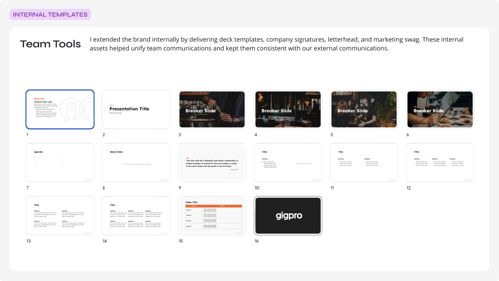

Gigpro · Brand evolution
Scaling Gigpro’s brand for a growing marketplace
Evolving a staffing marketplace brand into a clearer, more expressive, and more scalable system across product, marketing, and customer touchpoints.

Outcome
Created a flexible brand foundation intended to improve consistency, recognition, and speed across the experiences customers and internal teams encounter.
[Replace with verified adoption, business, operational, or qualitative outcome.]
The opportunity
A marketplace brand needed to work harder across more moments.
As Gigpro grew, its brand needed to carry more of the customer experience: communicating speed and trust in a high-stakes staffing marketplace, supporting increasingly varied marketing needs, and creating a recognizable presence across digital and physical touchpoints. The opportunity was not simply to refresh the visuals, but to create a system that could scale with the business.
Customer experience
People needed to quickly understand what Gigpro offered and feel confident taking action.
Business and team
The organization needed a clearer, more reusable foundation for campaigns, product-adjacent experiences, and evolving channels.

Fifteen conversations across six teams surfaced the themes the brand needed to carry consistently as the business grew.
The problem
Strong individual materials did not yet add up to a coherent system.
I spent my first two weeks at Gigpro on what I call “the work before the work”: getting rooted in historical context and discovery to inform where the brand and product needed to go next. In parallel, I audited how Gigpro showed up in the world — interviews, articles, internal docs, social channels, and two prior rebrands — to understand how the public was experiencing the brand in the wild.
Inconsistent expression
Visual elements needed clearer rules so individual assets could feel connected across channels.
Limited scalability
As new campaigns and touchpoints emerged, teams needed repeatable patterns rather than one-off design decisions.
Recognition and trust
The brand needed to express marketplace energy while remaining clear and credible in decision-making moments.
 Before
Before
The 2019 rebrand (shown above) was described internally as overly corporate and enterprise SaaS in feel — it missed the mark on expressing the mission authentically. A 2021 rebrand followed.
 Before
Before
This version was better received but still described as generic and inconsistently interpreted across marketing and product surfaces. [Add before-and-after brand-system comparison]
Key insight
The goal was not uniformity.
It was a flexible system that could create recognition and clarity while leaving room for personality and campaign expression.
Strategy
Build a recognizable core and a flexible toolkit.
I approached the work as a system-design problem: establish a durable set of recognizable foundations, then define enough flexibility for teams to adapt the brand across campaigns, content, product-adjacent experiences, and future needs.
Make recognition repeatable
Define the visual elements, hierarchy, and rules that make the brand feel like Gigpro at a glance.
Design for real-world variation
Create a toolkit that can support different audiences, formats, channels, and levels of urgency without losing coherence.
Balance energy with clarity
Use expressive visual elements to convey momentum and personality while preserving hierarchy, readability, and trust.
I led
The brand audit, visual direction, and identity system, including color, typography, photography, and illustration foundations. [Confirm scope and ownership]
I partnered with
Marketing managers, leadership, and engineering to translate the system into templates and product surfaces. [Add verified collaborators and functions]
I influenced
[Confirm decisions, rollout, governance, adoption, or prioritization]
The brand system
A distinctive visual language designed to scale.
The system paired a recognizable core with modular ingredients that could shift in intensity and expression based on context. Each choice was designed to help the brand stay legible, energetic, and consistent as it moved across formats. Gigpro was on its third brand iteration in four years, and the audit didn’t justify a fourth — sentiment toward the identity was neutral rather than negative, so I focused on strengthening the foundation rather than starting over.
Visual direction
Improve the ingredients and adjust the recipes
The selected direction prioritized expressive contrast, human energy, and bold composition while retaining a clear, practical information hierarchy. [Add moodboard or exploration imagery]
Typography and hierarchy
16 weights to 3
The original brand guide included two fonts with 16 total weights. Without clear usage rules, contractor applications varied widely. I reduced the set to four core weights, added one handwritten style, and provided a type stack example with light documentation to guide consistent, decisive communication. [Add verified typeface details and rationale if available.]

An example from the guide showing how the reduced type stack was meant to be used in a marketing application.
Color architecture
30 colors to 23
The palette was organized to create a recognizable baseline while allowing controlled flexibility across campaign and content formats. I identified 30 active colors across product and marketing surfaces, streamlined redundancies, and introduced semantic token naming so every color had a defined role. [Add accessibility and usage-rules details if verified.]

Streamlined the palette to remove redundancies, clarify usage, and add tints for flexibility.
Graphic language and modular elements
Recombinable without losing recognition
Supporting iconography and graphic devices were defined as modular elements — built to be recombined across product and marketing contexts without diluting the brand's recognizability.
A consistent icon system gave product and marketing a shared, recombinable visual vocabulary.
The expressive toolkit
Human, energetic, and adaptable across channels.
Once the core system was in place, the work expanded into a set of expressive tools that could make Gigpro recognizable across high-attention campaign moments and everyday customer communication.
Photography
From ad-hoc photo selection to a stylized photo bank
Photos were the primary medium for visual expression across marketing surfaces, but the existing direction lacked a cohesive style. I curated an image bank of nearly 500 royalty-free, photojournalistic-style photos and created a custom Adobe Lightroom preset to standardize the look and feel.

Purpose: Bring warmth and authenticity to how the hospitality workforce is represented.
System rule: Action-oriented, dynamic, diverse subjects, standardized through a single Lightroom preset.
Where it appears: Marketing site, social, campaign creative.
Illustration
Sourcing a style for the worker experience
Illustration faced the same challenges as photography — generic and lacking distinction. I selected a customizable open-source library that could flex across product and marketing, then established usage guidelines so it became the primary visual medium for worker-facing communication.

Purpose: Give worker-facing communication a friendlier, more human tone than photography alone could.
System rule: A single customizable, open-source illustration library applied consistently across surfaces.
Where it appears: Worker mobile app, onboarding, worker-facing marketing.
Campaign expression
Merchandise and campaign moments
Photography, typography, and color came together in campaign moments — merchandise, lifestyle photography, and product touchpoints — designed to feel distinctly Gigpro at a glance.

Purpose: Create a high-attention, recognizable moment for brand and campaign announcements.
System rule: Core palette, type, and photography direction applied together at full expression.
Where it appears: Campaign launches, merchandise, social announcements.
The system in action
A coherent experience across the moments that matter.
The value of the system came from its ability to carry a consistent brand experience across the marketplace journey — from first impression and marketing discovery to product-adjacent communication and ongoing engagement.
Discover and understand
Website and marketing surfaces
Rebuilt in Contentful, pre-designed modules gave marketing partners autonomy to assemble on-brand pages without engineering handoffs — the first impression most customers had of the brand.
 Campaign landing page
Campaign landing page
Decide and act
Business web app
On the business side, clear hierarchy and consistent components supported the moments where a customer needed to act with confidence: posting a gig, reviewing a schedule, managing a shift roster.
 Product-adjacent UI
Product-adjacent UI
Stay connected
Worker mobile app
For workers, the brand needed to stay recognizable across everyday, ongoing use — browsing gigs, empty states, and the small moments that build familiarity over time.
 Product-adjacent UI
Product-adjacent UI
The same foundation extended through a major business pivot: in early 2025, Gigpro merged with and adopted the Qwick brand. Because the system was built for flexibility, brand updates could be applied across platforms with minimal friction while new features reached parity in parallel. [Confirm scope and ownership of the merger rollout]

A new brand guide and asset directory made the Gigpro-to-Qwick transition targeted and low-friction.
Making the system usable
Designed for adoption, not just presentation.
A brand system succeeds when other people can use it confidently. The work translated visual direction into reusable patterns, examples, and guidance intended to support consistent execution as teams, channels, and campaign needs evolved.

A centralized Canva brand hub let non-designers create scalable, on-brand social content.

Modular email components let the marketing team swap pieces without losing brand consistency.

Presentation templates extended the same foundation to internal decks and board-level communication.
- Reusable templates and building blocks: [Confirm]
- Usage guidance and examples: [Confirm]
- Cross-functional alignment: [Confirm]
- Rollout across priority channels: [Confirm]
- Ongoing governance or iteration: [Confirm]
Impact
A foundation for a more consistent, recognizable brand experience.
Customer experience
[Add evidence of improved clarity, recognition, confidence, engagement, or feedback.]
Team efficiency
[Add evidence of reusable templates, reduced one-off decisions, faster production, or adoption.]
Business and brand
[Add evidence of broader rollout, brand consistency, campaign performance, growth support, or stakeholder validation.]
What this enabled
The system created a stronger foundation for future product launches, marketing campaigns, customer communications, and brand evolution. Over four years, it supported 85+ product and marketing launches, two rebrands, and a merger, alongside 278% company revenue growth. [Replace or supplement with verified next-step, rollout, or business-impact details — note that revenue growth reflects overall company performance, not a direct measure of brand-system impact.]
Reflection
Designing a brand system means designing for change.
This work reinforced the importance of treating brand as a living product system rather than a fixed set of assets. The strongest outcomes came from balancing clear rules with practical flexibility — giving teams enough structure to stay consistent and enough room to respond to real business needs.
[Add a specific lesson, future opportunity, or what you would evolve next.]
Other Works